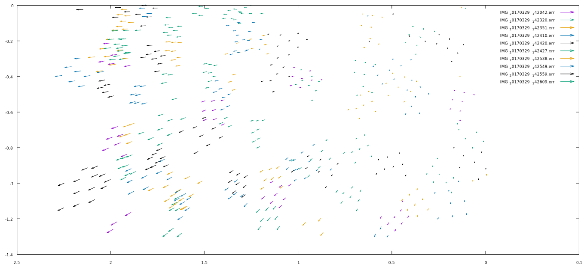

共線式 bottom-up
共線式是指投影原點、影像座標、 地面點，三點連成一條直線。利用這點， 只要已知相機內的焦距、光軸偏移等內方位參數， 及拍攝時的相機的座標、方位角， 即可由地面點推回影像座標， 稱為 bottom-up 的共線式計算。
最近在練習 nodejs ， 把 上次的 matrix 模組 重寫了一遍， 試著用了 原型繼承的寫法 。 然後為了計算共線式，又寫了個 vector 模組 。 一個 matrix 可以乘上 vector ， 返回一個 vector 。
再寫一個模組，先引用 vector 和 matrix ， 輸入內外方位參數，會返回一個函數， 這個返回的函數可以接受地面座標，返回影像座標。 所以我的模組是個 返回函數的函數 。
colinearitySolverGenerator
# load matrix and vector module
switch
when require
vector = require 'vector'
matrix = require 'matrix'
rotateMatrix = require 'rotateMatrix'
when window
vector = window.vector
matrix = window.matrix
rotateMatrix = rotateMatrix
# function input exterior, interior oriental parameter,
# output a colinearity bottom-up solver.
#
# @param {object} parameter of all or only exterior parameter.
# example: parameter = { # exterior parameter object
# # mm
# xo: 80.3735
# yo: 98.8612
# zo: 634.6268
#
# # radian
# omega: 0.0699
# phi: -0.1030
# kappa: 2.8744
#
# # optional, can input from second argument.
# c: 3.984584
# xp: 0.041933
# yp: -0.016958
# }
#
# @param {array} optional interior oriental parameter array,
# in order of [xa, ya, c].
# example: [3.984584, 0.041933, -0.016958] # mm
#
# if not defined interiorOrientalParameter,
# will get xa,ya,c from parameter.
#
# @return {function} a function transform ground x,y,z to photo x,y,z.
colinearitySolverGenerator = (parameter, interiorOrientalParameter) ->
# [xa - xp] = scale * M * [Xp - Xo]
{c,xp,yp, omega,phi,kappa, xo,yo,zo} = parameter
# compute rotate matrix from ground to image.
# spaceToPhotoMatrix = M
spaceToPhotoMatrix = rotateMatrix.wfk omega, phi, kappa
# camera position vector in ground system.
# cameraVector = Xo
cameraVector = vector.createFromArray [xo,yo,zo]
# cameraToPhotoVector = xp
cameraToPhotoVector =
interiorOrientalParameter || vector.createFromArray [xp,yp,c]
# return a function base on previous 3 vector/matrix.
# @param {number} ground x
# @param {number} ground y
# @param {number} ground z
# @return {vector} [x,y,z] in vector object,
# vector is a array like object defined in vector module.
return (xa,ya,za) ->
# pointVector = Xp
pointVector = vector.createFromArray [xa,ya,za]
# unScaleVector = M * [Xp - Xo]
unScaleVector = spaceToPhotoMatrix
.multiply pointVector.add cameraVector.multiply -1
# solve the scala factor by focus
scale = -cameraToPhotoVector[2] / unScaleVector[2]
# scale unScaleVector
unScaleVector
.multiply scale
# add xp is answer
.add cameraToPhotoVector
# export modules
switch
when module && module.exports
module.exports = colinearitySolverGenerator
when exports
exports.colinearitySolverGenerator = colinearitySolverGenerator
when window
window.colinearitySolverGenerator = colinearitySolverGenerator
包裝腳本
上面只是核心程式，還要讀入座標、 輸出結果，用 另一個腳本包裝 。 作業要求要讀入 icf 檔， icf 格式簡單還行， 各影像座標的內外方位參數就太難讀了， 所有點位的座標也是，就都直接寫入腳本裡。 這個寫腳本的過程也差不多和寫 bottom-up 模組一樣長了， 程式最麻煩的往往是外部的包裝，不是核心啊。
var colinearitySolverGenerator
if (typeof window == 'object') {
colinearitySolverGenerator = window.colinearitySolverGenerat
}
else if (typeof require == 'function') {
colinearitySolverGenerator = require('colinearitySolverGenerator')
}
else {
throw new Error("can not load colinearitySolverGenerator")
}
var vector = require('vector')
// interior oreintal parameter is same for a camera.
var iop = [
0.0419, // xp
-0.0169, // yp
3.9845 // c
]
// exterior oriental parameter different for every photo.
var eops = {
'IMG_20170329_142042.jpg': { xo:80.3735,yo:98.8612,zo:634.6268,omega:0.0699,phi:-0.1030,kappa:2.8744 },
'IMG_20170329_142739.jpg': { xo:-332.1590,yo:-77.8331,zo:436.8272,omega:0.3233,phi:-0.6313,kappa:-0.9429 },
// omit 23 row.
'IMG_20170329_142744.jpg': { xo:-253.1373,yo:-83.4696,zo:438.5719,omega:0.2580,phi:-0.5070,kappa:-2.4429 }
}
// ground point position.
var points = {
'WONB48_3': [355.713100, -30.126700, 9.142200],
'WONB5_1': [413.113000, 158.337400, 12.260600],
// omit 340 row.
'48': [212.677100, 168.701200, 5.967900],
'52': [206.972100, 49.370100, 6.600600]
}
var pointsInPhoto = {}
// photo size
photoSize = [3328, 1872]
.map(function(s){ return s * 0.0000014 / 2 })
// object save colinearity solver for each photo.
var solvers = {}
for (var i in eops) {
solvers[i] = colinearitySolverGenerator(eops[i], iop)
pointsInPhoto[i] = {}
for (var j in points) {
// equal to solvers[i](points[j][0], points[j][1], points[j][2])
var vec = solvers[i].apply(this,points[j])
// test if point inside photo.
if (vec[0] <= photoSize[0] && vec[1] <= photoSize[1]) {
pointsInPhoto[i][j] = vec
}
}
}
function createIcfTable(data) {
return data
.split(/\n/g)
.map(function (row) {
return row.split(/\s+/g).map(function (s,i) {
if (i == 0) return s
else return Number(s)
})
})
}
function createIcfStructure(data) {
var structure = {}
data.trim().split(/\n/g).map(function(row){
return row.split(/\s+/g)
}).reduce(function(structure, row){
structure[row[0]] = row.slice(1).map(Number)
},structure)
return structure
}
photoPointError = {}
// use closure to save filename of image.
function wrapFileName(filename) {
// function load xxx.icf data
return function whenIcfRead(err, data) {
if (err) throw err
var icfStructure = createIcfStructure(data)
var icf = filename, jpg = filename.replace(/icf$/,'jpg')
var pointsError = {}
for (var point in icfStructure) {
if (pointsInPhoto[jpg][point]) {
var diff = pointsInPhoto[jpg][point]
.multiply(-1)
.add(icfStructure[point])
pointsError[point] = diff
}
}
photoPointError[jpg] = pointsError
}
}
for (var jpg in pointsInPhoto) {
var icf = jpg.replace(/jpg$/,'icf')
fs.readFile(icf, 'utf8', wrapFileName(icf))
}
// output error in format:
// pointname x y z dx dy dz
function tableString(jpg) {
var table = []
for (var point in photoPointError[jpg]) {
table.push(
point + '\t' +
pointsInPhoto[jpg][point] + '\t' +
photoPointError[jpg][point]
)
}
return table.join('\n')
}
// output error to file: xxx.err
for (var jpg in pointsInPhoto) {
fs.writeFile(jpg.replace('jpg','err'), tableString(jpg), 'utf8')
}
// export result to debug.
exports.pe = photoPointError
exports.prip = pointsInPhoto
exports.createIcfStructure = createIcfTable
exports.tableString = tableString
成果
誤差圖

單位為公尺，各影像用不同的符號。
誤差資料
- IMG_20170329_142042
- IMG_20170329_142058
- IMG_20170329_142125
- IMG_20170329_142211
- IMG_20170329_142226
- IMG_20170329_142240
- IMG_20170329_142246
- IMG_20170329_142256
- IMG_20170329_142310
- IMG_20170329_142320
- IMG_20170329_142351
- IMG_20170329_142410
- IMG_20170329_142420
- IMG_20170329_142427
- IMG_20170329_142538
- IMG_20170329_142549
- IMG_20170329_142559
- IMG_20170329_142609
- IMG_20170329_142617
- IMG_20170329_142631
- IMG_20170329_142643
- IMG_20170329_142700
- IMG_20170329_142713
- IMG_20170329_142724
- IMG_20170329_142739
- IMG_20170329_142744